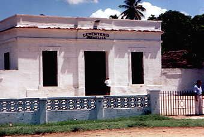
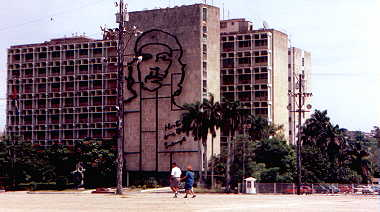
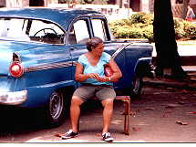
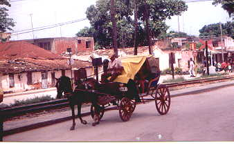
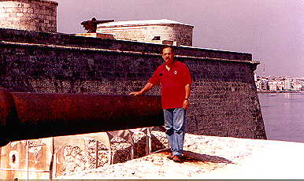

Photos by Fred Weiner
Page Two

Cementerio Israelita in Santiago
de Cuba

Revolution Square, Havana

Guarding a car - 25 cents for two hours

Pubic transportation. This is not an exaggeration.
Transportation in Cuba is limited, and bicycles, buggies,
and old trucks are frequently used.

Fred and his big gun.
Back to the Photo Tour